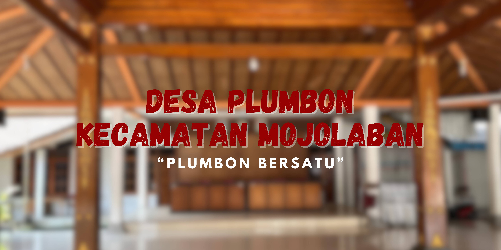

SEJARAH DESA

Asal Usul Nama Desa Plumbon
Segala sesuatu yang ada di dunia ini ada karena ada yang membuat atau menciptakan, begitu pula dengan nama sebuah desa. Desa Plumbon tidak lepas dari asal-usul sejarah sebagaimana cerita para sesepuh desa terdahulu.
Alkisah pada tahun 1741 M, R.T. HONGGOWONGSO melakukan perjalanan dari Kraton Surakarta ke arah timur Sungai Bengawan Solo dengan maksud hanitik bumi (mencari tempat/tanah) guna perpindahan Kraton. Sesampainya di sebelah timur Bengawan Solo, ia merasa bingung hendak ke mana karena sudah 7 hari perjalanan namun belum mendapatkan petunjuk ilham dari Tuhan.
Dalam kondisi haus dan lapar saat terus berjalan, akhirnya beliau kejeglong (terperosok/terjatuh) di sebuah Balumbang (kolam/rawa) yang besar dan penuh dengan pohon tales serta lumbu. Akhirnya beliau berucap:
“Ora nyono yen aku biso kejeglong ing kene, papan kang kebak wit tales lan lumbu, duh Gusti mugi kinabulno ing benjang wonten rejane papan ngriki kanamekno : DESA PALUMBON (umumnya sekarang disebut DESA PLUMBON Tahun 1741 M).”
Sejarah Kepemimpinan Kepala Desa
Secara terperinci berikut adalah daftar pimpinan Pemerintahan Desa Plumbon dari masa ke masa:
| No | Nama Kepala Desa | Masa Jabatan |
|---|---|---|
| 1 | Bapak Sontosucitro | Periode Awal |
| 2 | Bapak Atmowiryono | - |
| 3 | Bapak Citro Sunarto | 1943 – 1980 |
| 4 | Bapak Sri Gunung | 1985 – 1993 |
| 5 | Bapak Sugeng Kasyanto | 1993 – 1995 |
| 6 | Ibu Sri Daru Wahyuningsih | 1995 – 2014 |
| 7 | Bapak Sigit Suparno (Pj.) | 2014 – 2016 |
| 8 | Bapak Suparno | 2016 – 2022 |
| 9 | Bapak Eko Hariyanto, S.E, S.Sos | 2022 – 2030 (Petahana) |
Letak Geografis & Batas Wilayah
- Sebelah Utara: Desa Gadingan
- Sebelah Selatan: Desa Wirun
- Sebelah Barat: Sungai Bengawan Solo
- Sebelah Timur: Desa Dukuh